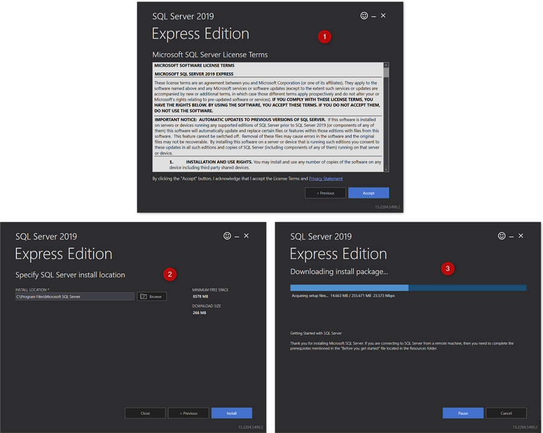
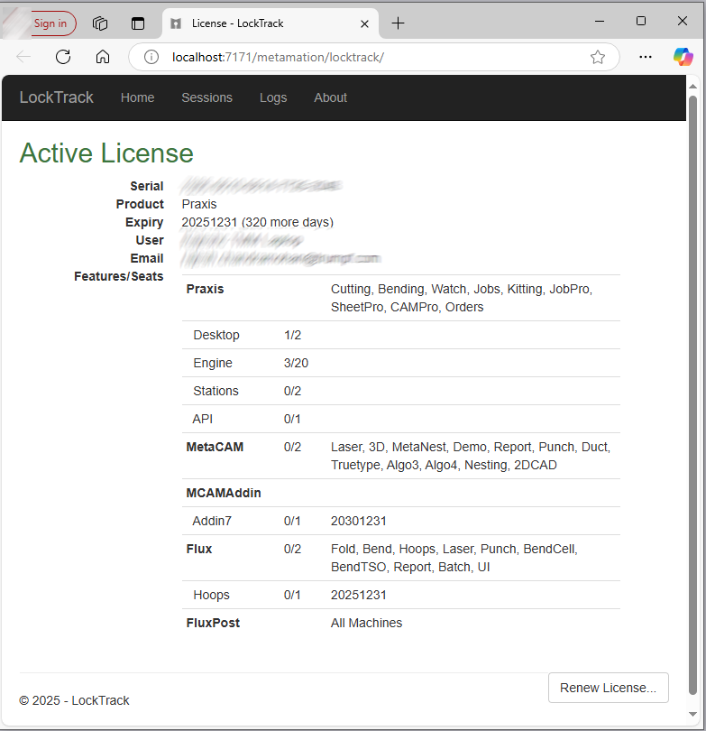

Server installation
Follow the instructions to install TruSmartCAM Server installation along with SQL.
|
Administrator Rights
To execute this installation, user must have administrative privileges. |
-
Execute Setup.TruSmartCAM.<version>.exe to begin the installation.
| Version is a number. |
-
Read the license agreement and choose I accept the agreement and then Click 下一页 .

Step 1 : Install Location
-
Mention the installation directory or accept the installation default
C:\Program Files\Metamation\Praxisand click 下一页.-
C:\Program Files\Metamation\Praxis- Install folder will have following folders : Bin, MetaCAM, Samples and Tracker. -
C:\Program Data\Metamation- Data Folder will have following folders : TruSmartCAM, TecZone and MetaCAM.
-

Step 2 : Components Selection
| Installation Type | Components |
|---|---|
Full |
Server + Desktop client + Engine |
Client |
Desktop Client |
Server |
Server + Desktop client |
Station |
Picks all Stations Terminal like TecZone, MetaCAM, RightAngle(Bend Controller), Vulcan(Laser Machine Controller) |
Custom |
Picks by user choice. |
-
Choose Full Installation. Pick Code Senders and Bend Code Senders from TruSmartCAM Tools. Now the Installation type changes to 定制. Click 下一页.

Step 3 : Choose Install SQL Server
|
SQL Express 2022 安装仅对 TruSmartCAM Server 需要。此选项不适用于 Client 和 Sync 安装。此外，第一次会选中并安装，此后可以忽略。如果 TruSmartCAM 服务器中已安装 SQL，用户可以忽略步骤 3。 |
-
在选择其他任务中：点击 Install SQL Express 并点击 下一页。
-
在准备安装中：总结所有安装功能并点击 Install。

步骤 4：SQL Server 安装
一旦 TruSmartCAM 组件安装完成，安装程序将继续 SQL 服务器安装。接受许可协议以继续使用默认选项安装 SQL express。

安装完成后点击 Close 并完成安装。

| 根据 Windows 版本，关闭 SQL 安装可能会提示重新启动。 |
步骤 5：Windows 桌面快捷方式
-
SQL 安装后，如果系统未重新启动，则选中 Launch TruSmartCAM 复选框并点击 Finish。
-
如果系统重新启动，则在桌面上启动 TruSmartCAM 快捷图标或在 Windows 开始程序中输入 TruSmartCAM 并 以管理员身份运行。
| 服务器安装：桌面上有 TruSmartCAM 和 TruSmartCAM License 快捷图标。+ Client/SYNC 安装：桌面上只有 TruSmartCAM 快捷图标。 |

步骤 6：许可证注册
-
在 Serial Number 字段中，输入 Trumpf Metamation Service Team 提供的 TruSmartCAM Serial key。在"Registered to"字段中输入 <Company Name> 和电子邮件。点击 OK。

|
如果网络防火墙阻止许可证注册或 TruSmartCAM Server PC 中没有互联网，则通过离线激活完成 TruSmartCAM 许可证。将 C:\ProgramData\Metamation\Praxis 文件夹中的 Prax.request 发送电子邮件给 Trumpf Metamation Service Team。Trumpf Metamation Team 将提供需要放置在此文件夹中的 Prax.lock。 |
步骤 7：初始一次性配置
-
输入数据库名称并设置数据存储位置。选中 使用 SQL 服务器 复选框并选择要连接到数据库的 SQL 服务器名称。点击 OK。

-
TruSmartCAM 桌面客户端打开，底部显示 Database Connection Succeeded。
-
TruSmartCAM、TecZone 和 MetaCAM 配置文件是使用默认配置机器或针对 TruSmartCAM 许可证机器创建的。相同的配置将在所有 TruSmartCAM 客户端之间共享。

欢迎屏幕显示 Windows 用户登录名作为 TruSmartCAM 登录名和名称。第一个 TruSmartCAM 用户被视为 网站管理员。提供电子邮件和密码。点击 确定 。
选中 记住我 复选框以保存登录凭据以供下次使用。 清除 记住我 复选框将在每次启动 TruSmartCAM 应用程序时提示输入登录名和密码对话框。

步骤 8：TruSmartCAM 登录
-
关闭 TruSmartCAM 并重新打开。系统提示您输入 TruSmartCAM 登录凭据。

-
登录的用户名显示在 TruSmartCAM 应用程序标题中用户图标旁边。

-
当您将鼠标悬停在用户图标上时，系统会显示：

-
用户角色（例如：Programmer、Admin）。
-
注销快捷方式：Ctrl+L。
-
-
点击用户图标会打开一个菜单，允许您：

-
编辑信息… - 更新您的个人资料详细信息。
-
更改密码… - 更改您的账户密码。
-
登出 - 退出应用程序。
-
取消 - 关闭菜单而不进行任何更改。
-
步骤 9：工厂机器配置
-
TruSmartCAM License [所有机器启用许可证位]：默认 TruSmartCAM 机器和材料被视为工厂配置。
-
TruSmartCAM License [无演示和少数机器位启用]：这些少数机器和默认材料被视为工厂配置。
-
（打开 → 导入）从
C:\Program Files\Metamation\Praxis\Samples\Parts导入一个新零件并验证零件是否成功导入。

注 1：TruSmartCAM Monitor
-
带有 Engine 安装的 TruSmartCAM Monitor（站点管理员权限）：
-
带有 Engine 以及站点管理员 TruSmartCAM 权限的 TruSmartCAM Monitor 将具有以下选项：
-
将 TruSmartCAM 配置、TecZone、MetaCAM 配置推送到所有 TruSmartCAM 客户端。还有权创建新的 TruSmartCAM 用户登录。
-
显示代理将显示可用于执行自动化任务的总引擎数，这取决于 TruSmartCAM 许可证。
-
-

-
不带 Engine 安装的 TruSmartCAM Monitor（站点管理员权限）:

-
不带 Engine 安装的 TruSmartCAM Monitor（非站点管理员权限）：

|
运行 TruSmartCAM 应用程序的 PC 必须安装 Engine TruSmartCAM 组件 [服务器 PC 或任何客户端安装]。安装了 Engine TruSmartCAM 组件的 PC 应该 24x7 运行以执行所有自动化任务。 |
注 2：Lock Tracker
-
点击 TruSmartCAM Server 桌面上可用的 TruSmartCAM License 快捷方式。或者，在任何 Web 浏览器中打开 http://localhost:7171/metamation/locktrack URL。
这将打开 Lock Tracker 模块，其中包含许可证信息、TruSmartCAM 当前会话信息和日志。
LockTracker HOME 页面：显示 TruSmartCAM 序列号、序列号到期信息和可用序列号位信息。

LockTracker SESSIONS 页面：当前 TruSmartCAM Server 连接信息，如 TruSmartCAM Desktop 客户端 PC、PMonitor、PEngine 状态。

LockTracker LOGs 页面：TruSmartCAM 客户端启动和注销 | Pmonitor 启动和 PEngine 连接/断开状态等，可以在此日志页面中查看。

注 3：OpenGL
-
TruSmartCAM 应用程序在打开时立即关闭，并且任务栏中也未显示 pmonitor。
-
这表示 OpenGl 问题。
-
另一种确认方式：打开 C:\Program Files\Metamation\Praxis\Bin\Flux.exe，它会显示有关 OpenGL 问题的错误对话框。

-
更新 C:\ProgramData\Metamation\Praxis\Prax.ini 的 options 部分，添加 GLVersion=1 可使 TruSmartCAM 应用程序成功打开。
[Options]
GLVersion=1.0